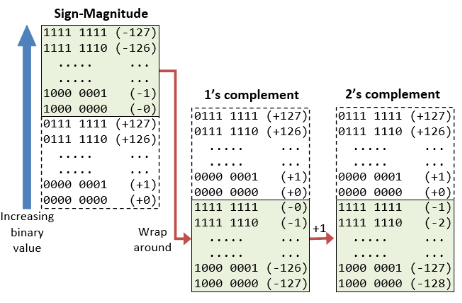
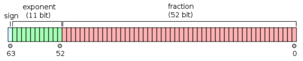
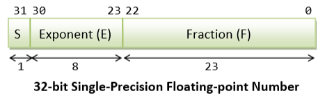
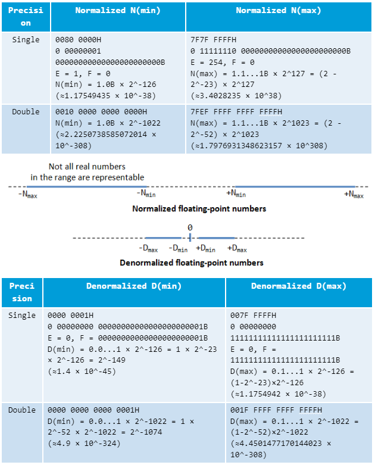

In most cases, there is no difference in speed between using signed and unsigned integers. But there are a few cases where it matters:
Conversion between signed and unsigned integers is costless. It is simply a matter of interpreting the same bits differently.
int a, b;
double c;
b = (unsigned int)a / 10; // Convert to unsigned for fast division
c = a * 2.5; // Use signed when converting to double
Not to mix signed and unsigned integers in comparisons, such as <. The result of comparing signed with unsigned integers is ambiguous and may produce undesired results.
Multiplication and division take longer time.
Pre-increment operator ++i and the post-increment operator i++ are same in efficiency by themselves, they are as fast as additions. But they are some exceptions.
The following guidelines can be used for improving code that contains integer division:
// Example 14.10
int a, b, c;
a = b / c; // This is slow
a = b / 10; // Division by a constant is faster
a = (unsigned int)b / 10; // Still faster if unsigned
a = b / 16; // Faster if divisor is a power of 2
a = (unsigned int)b / 16; // Still faster if unsigned
In 2's complement representation:
The following diagram explains how the 2's complement works. By re-arranging the number line, values from -128 to +127 are represented contiguously by ignoring the carry bit.

Range of n-bit 2's Complement Signed Integers
An n-bit 2's complement signed integer can represent integers from -2^(n-1) to +2^(n-1)-1
| n | minimum | maximum |
|---|---|---|
| 8 | -(2^7) (=-128) | +(2^7)-1 (=+127) |
| 16 | -(2^15) (=-32,768) | +(2^15)-1 (=+32,767) |
| 32 | -(2^31) (=-2,147,483,648) | +(2^31)-1 (=+2,147,483,647)(9+ digits) |
| 64 | -(2^63) (=-9,223,372,036,854,775,808) | +(2^63)-1 (=+9,223,372,036,854,775,807)(18+ digits) |
Modern compilers will use vector registers (instead of x87 registers) for floating point calculations whenever they are available, i.e. in 64-bit mode or when the SSE or higher instruction set is enabled.
In most cases, double precision calculations take no more time than single precision.
double a, b;
a = b / 1.2345; // change to a = b * (1. / 1.2345);
Do not mix single and double precision in the same expression.
float a, b;
a = b * 1.2; // 1.2 is double. Mixing double and float is bad. Use 1.2f instead.
The C/C++ standard specifies that all floating point constants are double precision by default, so 1.2 in this example is a double precision constant. The code needs to convert b from single precision to double precision before multiplying with the double precision constant and then convert the result back to single precision. These conversions take time.
Avoid conversions between integers and floating point variables, if possible.
A good summary of IEEE754: https://users.cs.duke.edu/~raw/cps104/TWFNotes/floating.html
Example:
43.625 = 1.01011101 * 2^5 , in single-precision floating point:
Special Values
Double precision (64 bits) floating point

SIGN (1) EXPONENT (11) MANTISSA (52)
Single precision (32 bits) floating number

SIGN (1) EXPONENT (8) MANTISSA (23)
Ranges
There are two ranges

An example of floating-point underflow:
double d = DBL_MIN / 3.0;
A conforming IEEE 754 implementation should set d to a “subnormal”, that is, a number that is so close to zero that precision is reduced. Some implementations may “Flush to Zero”. The consequence in the example above is to set d to zero.
Floating-point underflow is not undefined behavior. You can, if you wish, use “FPU exceptions” to detect it either by polling or by receiving SIGFPE.
Applications that generate floating point underflow can benefit from setting the flush-to-zero mode. It is strongly recommended to set the flush-to-zero mode unless you have special reasons to use subnormal numbers.
// Example 7.5. Set flush-to-zero mode (SSE):
#include <xmmintrin.h>
_MM_SET_FLUSH_ZERO_MODE(_MM_FLUSH_ZERO_ON);
You may, in addition, set the denormals-are-zero mode if vector regsiters are available:
// Example 7.6. Set flush-to-zero and denormals-are-zero mode (SSE2):
#include <xmmintrin.h>
_mm_setcsr(_mm_getcsr() | 0x8040);
Almost all floating point errors will propagate to the end result where they appear as INF or NAN. This is a very efficient alternative to exceptions and fault trapping.
Floating-point overflow and division by zero gives INF (infinity).
The special code NAN (not a number) occurs:
The function finite() will return false when the parameter is INF or NAN
Using integer operations for fp
The order of boolean operands
If a variable is known to be 0 or 1 (a boolean), then boolean operators (&&, ||) have same effect of bitwise operators (&, |)
Bitfields may be useful for making data more compact. Accessing a member of a bitfield is less efficient than accessing a member of a structure.
It is faster to compose a bitfield by the use of << and | operations than to write the members individually
// unoptimized
struct Bitfield {
int a:4;
int b:2;
int c:2;
};
Bitfield x;
int A, B, C;
x.a = A;
x.b = B;
x.c = C;
// optimized
union Bitfield {
struct {
int a:4;
int b:2;
int c:2;
};
char abc;
};
Bitfield x;
int A, B, C;
x.abc = A | (B << 4) | (C << 6);
// Or, if protection against overflow is needed:
x.abc = (A & 0x0F) | ((B & 3) << 4) | ((C & 3) <<6 );
Pointers and references are the same thing (same machine code will be genreated).
using pointers requires an extra register to hold the value of the pointer or reference.
when an integer is added to a pointer then its value is multiplied by the size of the object pointed to. The time is equal to a multiplication and an addition.
The object pointed to can be accessed approximately two clock cycles after the value of the pointer has been calculated.
Below different methods have same effect in performance, choice is a matter of programming style.
// Example 7.19
int i; float f;
f = i; // Implicit type conversion
f = (float)i; // C-style type casting
f = float(i); // Constructor-style type casting
f = static_cast<float>(i); // C++ casting operator
Conversion between signed and unsigned integers is costless. It is simply a matter of interpreting the same bits differently. There is no checking for overflow, and the code takes no extra time.
An integer is converted to a longer size by extending the sign-bit if the integer is signed, or by extending with zero-bits if unsigned. This typically takes one clock cycle. Converting an integer to a smaller size is done simply by ignoring the higher bits. There is no check for overflow. It takes no extra time.
Conversions between float, double and long double take between 2 and 15 clock cycles (depending on the processor) when the XMM registers are used. It takes no extra time in x87 register stack.
Example: avoid int to float conversion by replacing an integer variable by a float variable.
// unoptimzied
float a[100]; int i;
for (i = 0; i < 100; i++) a[i] = 2 * i;
// optimized
float a[100]; int i; float i2;
for (i = 0, i2 = 0; i < 100; i++, i2 += 2.0f) a[i] = i2;
C++ standard specifies that conversion from floating-point to integers use transaction towards zero, rather than rounding.
It is important to avoid floating-point-to-integer conversions in the critical part of a code
The reinterpret_cast operator is used for pointer conversions. It does not produce any extra code.
In the conversion below, the compiler does not produce any extra code for actually making a pointer. The pointer is simply optimized away. But the & operator forces the compiler to store x in memory rather than in a register.
float x;
*(int*)&x |= 0x80000000; // Set sign bit of x
Dangers doing so:
Another way doing fabs(f) is using union. A union can also be used for accessing the same data in different ways. Example:
union {
float f;
int i;
} x;
x.f = 2.0f;
x.i |= 0x80000000; // set sign bit of f
cout << x.f; // will give -2.0
In this example, the sign bit of f is set by using the bitwise OR operator, which can only be applied to integers.
It doesn’t generate extra code and it doesn’t take extra time.
In general, the expression dynamic_cast<Type*>(ptr), converts the pointer ptr to a pointer of type Type*.
The C++ programming language definition implies that information about types be available at run time for three distinct purposes:
(3) only requires type information about dynamic class types, but (1) and (2) may apply to other types as well; for example, when a pointer to an int is thrown, it can be caught by a handler that catches "int const*".